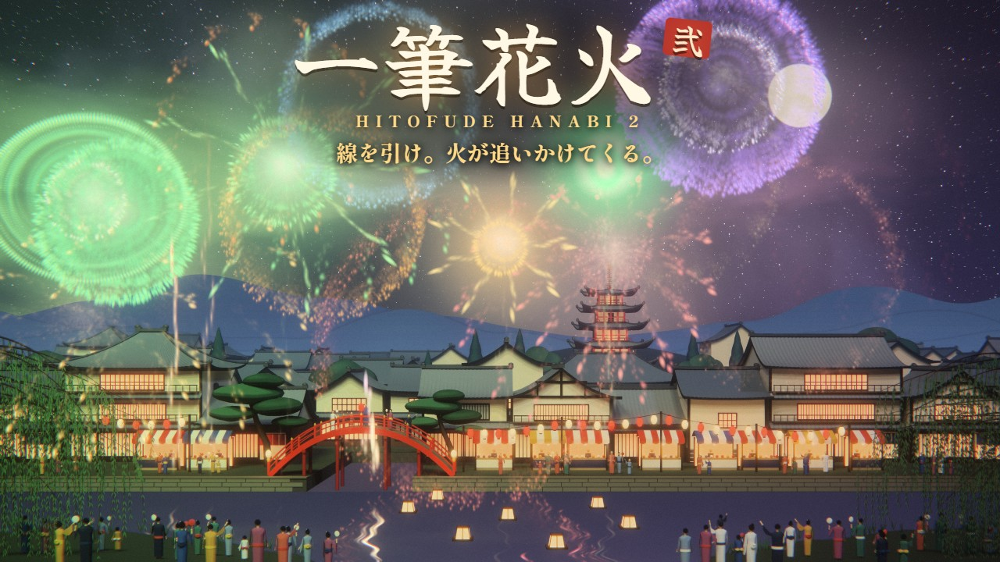
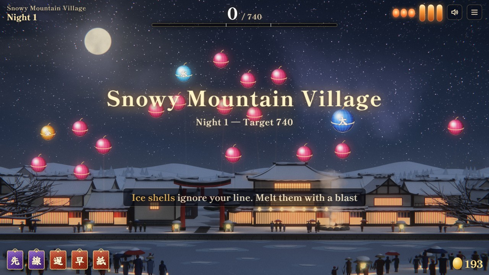
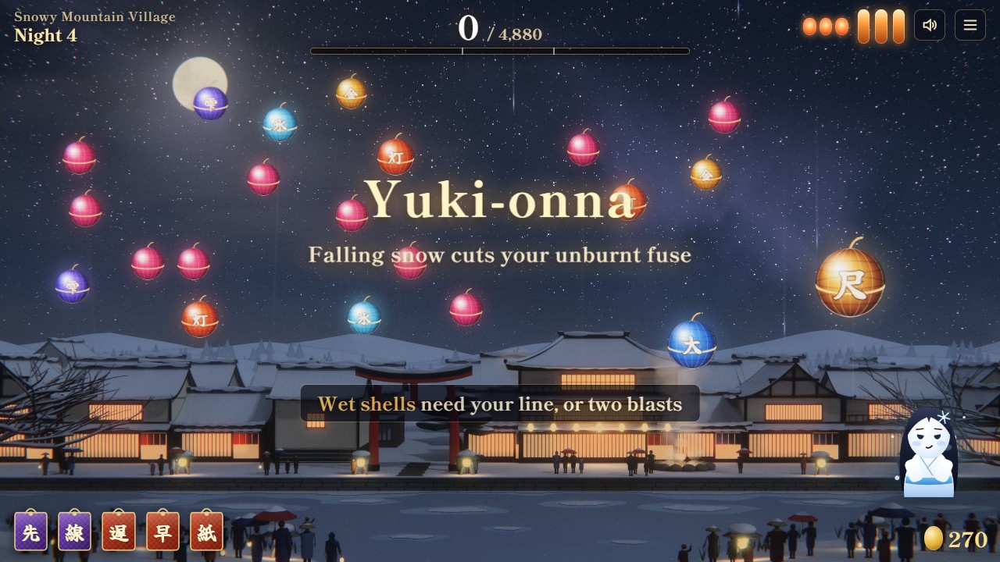
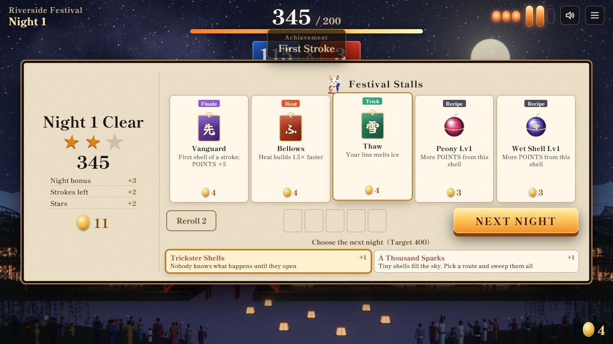
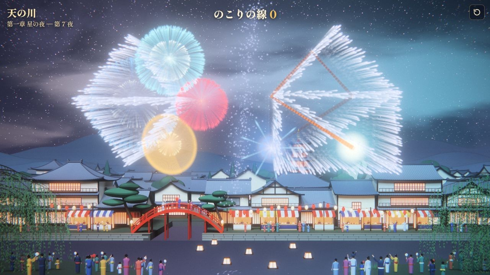
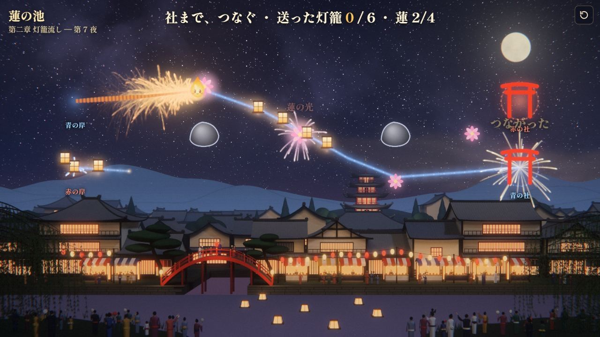
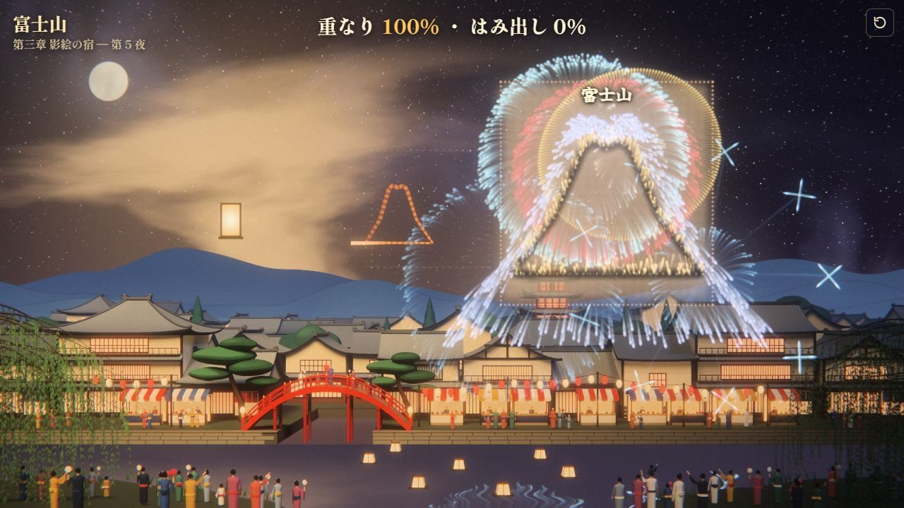
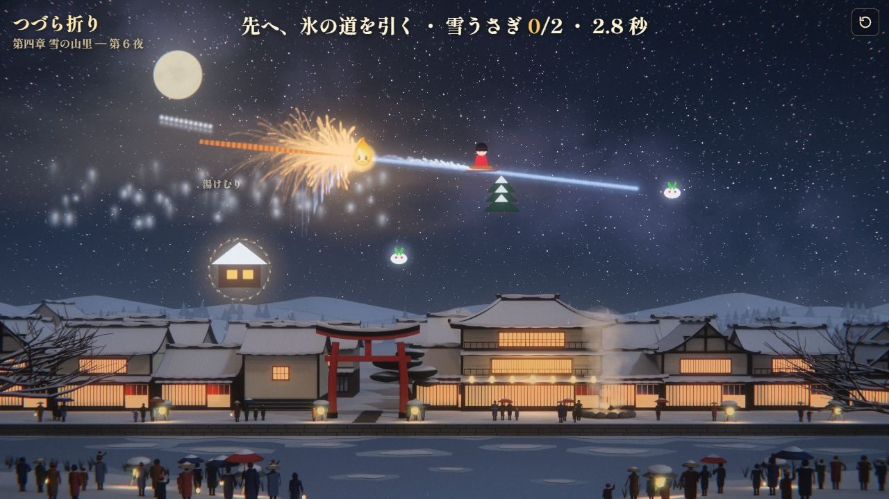
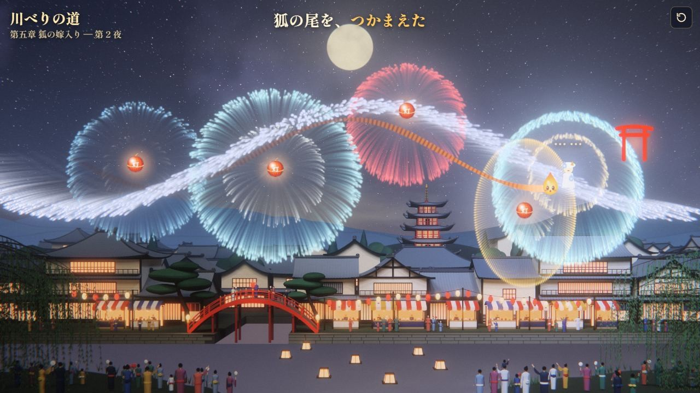
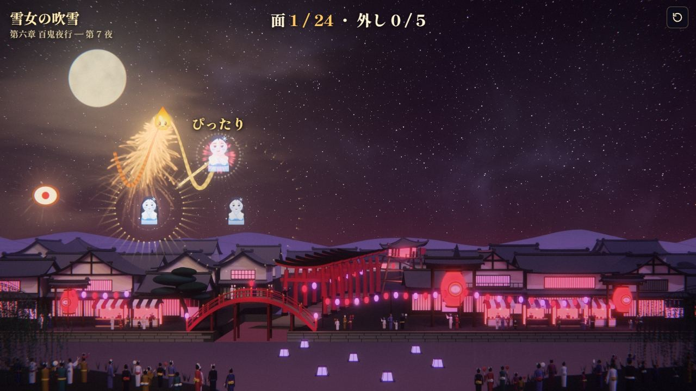

紹介記事・動画・ゲーム実況・配信のための素材とガイドです。実況・配信・収益化は自由、連絡もいりません。
実況・配信のガイドライン
- 実況・配信・動画の投稿は自由です。YouTube・ニコニコ・Twitch・TikTok など、場所は問いません。
- 収益化（広告・投げ銭・メンバー限定）も自由です。
- 連絡はいりません。知らせてもらえると喜んで見に行きます（X @ViewsEngineer、タグ #一筆花火）。
- 概要欄に遊ぶ場所のリンク https://yuichi916.github.io/hanabi/ があると嬉しいです（無くても大丈夫です）。
- お願いは1つだけ: 物語「送り火」の結末は、動画のサムネイルと題名では明かさないでください。本編の中で明かすのは自由です。
- ゲーム内の音楽も、そのまま配信に流して大丈夫です。
構成: 物語は全7章（各章7〜8面）＋最終章。ローグライク（祭り）は1回最大24夜。会話は飛ばせます。
概要
| 題名 | 一筆花火2（いっぴつはなび に）／英題 Hitofude Hanabi 2 |
|---|---|
| ジャンル | 一筆書きアクションパズル・ローグライク＋物語モード |
| 公開日 | 2026年11月9日 |
| 値段 | 無料（登録・インストール不要） |
| 遊べる環境 | ブラウザ（PC・スマホ・タブレット）。スマホは縦、PC は横 |
| 言語 | 日本語・英語（物語モードは日本語のみ） |
| 作った人 | ViewsEngineer（個人） |
| 前作 | 一筆花火（別のゲーム。いまも遊べます） |
遊べる場所
紹介文（そのまま使えます）
一行
短い紹介
物語「送り火」の章（筋を明かさない範囲）
紹介動画（21秒・縦）
YouTube: https://youtube.com/shorts/JaJ0VjaILRM（すべて実際のゲーム画面です）
画像
押すと原寸（1280×720）が開きます。紹介・サムネイル・記事にそのまま使ってください。




















ほかに: 正方形のアイコン（800×800）・横長の帯（2000×500）・共有用の画像（1200×630）


作り方と AI の使用
- 絵: Blender とプログラム（Canvas・WebGL）で描いています。画像生成 AI は使っていません。
- 音楽: Suno（生成 AI）で作りました。
- プログラムと物語の文章: 作者が生成 AI（Claude）と一緒に書きました。
English
Hitofude Hanabi 2 — Draw the fuse. The flame is right behind you. A free browser game: draw one line and the flame chases it from where you began. Open every fireworks shell before it catches you. Roguelike with 3 festivals × 8 nights, 62 charms and yokai bosses (English supported), plus a 7-chapter story mode (Japanese only).
Streaming & videos: free to stream, record and monetize. No need to ask. Please don't spoil the story's ending in thumbnails or titles. Art: Blender and code (no AI-generated images). Music: Suno (AI). Code and text written with Claude.